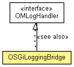

org.eclipse.net4j.util.om.log
Class OSGiLoggingBridge
java.lang.Object
 org.eclipse.net4j.util.om.log.OSGiLoggingBridge
org.eclipse.net4j.util.om.log.OSGiLoggingBridge
- All Implemented Interfaces:
- OMLogHandler
public class OSGiLoggingBridge
- extends Object
- implements OMLogHandler

| Methods inherited from class java.lang.Object |
clone, equals, finalize, getClass, hashCode, notify, notifyAll, toString, wait, wait, wait |
INSTANCE
public static final OSGiLoggingBridge INSTANCE
OSGiLoggingBridge
protected OSGiLoggingBridge()
logged
public void logged(OMLogger logger,
OMLogger.Level level,
String msg,
Throwable t)
- Specified by:
logged in interface OMLogHandler
logged
public void logged(org.osgi.framework.BundleContext bundleContext,
OMLogger.Level level,
String msg,
Throwable t)
getLogService
protected org.osgi.service.log.LogService getLogService(org.osgi.framework.BundleContext bundleContext)
toOSGi
public static int toOSGi(OMLogger.Level level)
Copyright (c) 2004 - 2011 Eike Stepper (Berlin, Germany) and others.